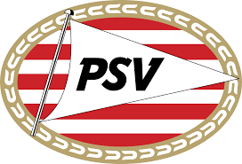

PSV is een voetbalclub uit Eindhoven. Deze werd op 31 augustus 1913 opgericht onder de naam Philips Sport Vereniging als sportvereniging van Philips-medewerkers.
PSV groeide uit tot een club die behoort tot de traditionele top drie van het Nederlands betaald voetbal.
Op de UEFA-ranglijst van beste clubs in Europa stond PSV op 1 juli 2019 met 37.000 punten op de 41e plaats.
De thuisbasis van PSV is het Phillips Stadion.
PSV deed in 1914 voor de eerste keer mee aan de competitie en speelde in het seizoen 1921/22 voor het eerst in de hoogste klasse van het Nederlandse voetbal.
Midden jaren 70 was de eerste 'gouden periode' voor PSV.
Met voetballers als Willy van der Kuijlen en de gebroeders Willy en René van de Kerkhof won PSV vanaf het seizoen 1973/74 meerdere landskampioenschappen en nationale bekers.
Bij de eerste editie van de Champions League in 1992/93 was PSV de eerste Nederlandse vertegenwoordiger.
